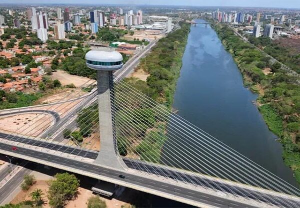

O Piauí é um estado localizado na região Nordeste do Brasil, com uma população de aproximadamente 3,3 milhões de habitantes. Sua capital é Teresina, uma cidade que combina tradição e modernidade. O governador atual é Rafael Fonteles. A economia do Piauí é baseada principalmente na agricultura, com destaque para a produção de soja, milho, feijão e algodão, além do setor de comércio e serviços. O estado também possui potencial turístico, com suas belezas naturais, rios e sítios arqueológicos que atraem visitantes de várias regiões.
